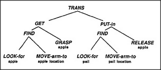

If agents had huge minds like ours, they could talk the way people do — and Add could say, Please, Get an apple and Put it in the pail. Perhaps our largest agencies can deal with messages like that, but smaller agencies like Get cannot interpret such expressions because they're much too specialized to understand complicated wants and needs. Then how could Get know what to get — in order to find an apple rather than a block, a fork, or a paper doll? To examine this problem, we'll have to make some assumptions about what happens in a listener's mind. For the moment, let's simply assume that the result is to activate a Builder-like society with these ingredients:
At first sight, it seems as though all these agents are involved with the apple and the pail. But a closer look shows only the low-level agents Look-for and Grasp are actually concerned with the physical aspects of actual objects; all the others are merely middle-level managers. For example, the agent Get doesn't actually get anything; it only turns on Find and Grasp at the proper time. To be sure, Look-for will need some information about what to look for — that is, about an apple's appearance, and Move will need information about the apple's actual location. Nevertheless, we'll see that this information can become available to those agents without any need for messages from Get. To see how agents can operate without explicit messages, let's compare two ordinary language descriptions of how to put an apple into a pail. Our first script mentions each object explicitly in every line, the way one might speak to a novice.
Look for an apple. Move the arm and hand to the apple's location. Prepare the hand to grasp an apple-shaped object. Grasp the apple. Now look for the pail. Move the arm and hand to the pail's location. Release the hand's grip on the apple.
Now let's rewrite this description in a style more typical of normal speech.
Look for an apple. Move the arm and hand to its location. Prepare the hand to grasp an object of that shape. Grasp it. Now look for the pail. Move the arm and hand to its location. Release the hand's grip.
This second script uses the words apple and pail only once. This is how we usually speak; once something has been mentioned, we normally don't use its name again. Instead, whenever possible, we replace a name by a pronoun word. In the next few sections I'll argue that it is not only in language that we replace things with pronounlike tokens; we also do this in many other forms of thought. It could scarcely be otherwise, because in order to make sense to us, our sentences must mirror the structures and methods we use for managing our memories.